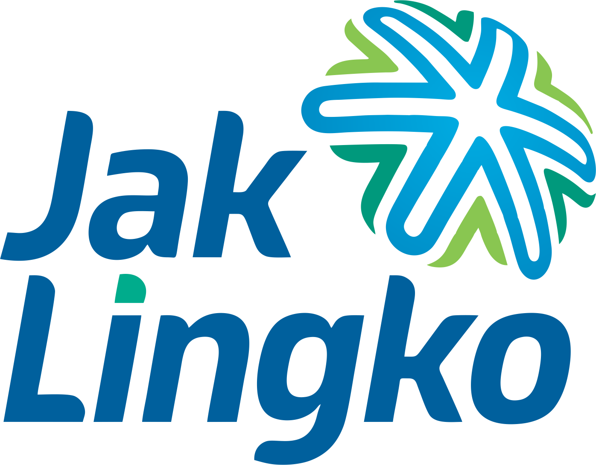
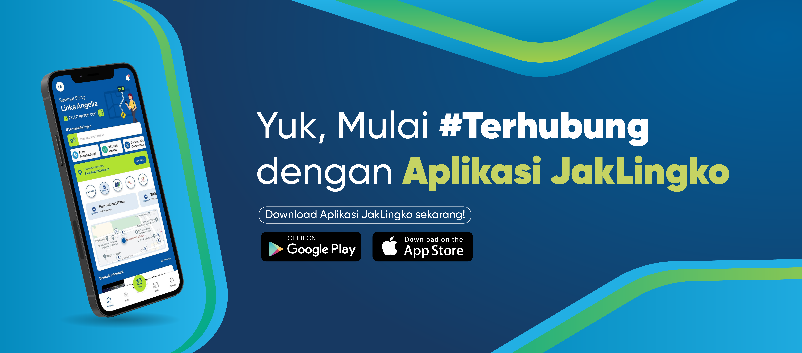
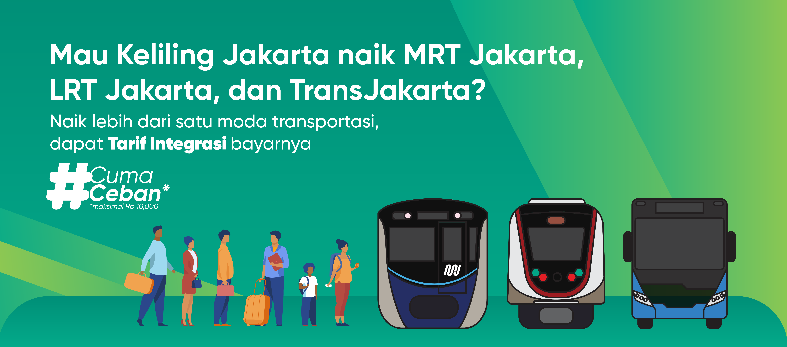
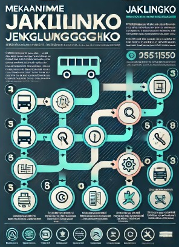

Layanan Penganduan
Layanan Pengaduan Pramudi Mikrotrans
Kode Etik Supir JakLingko
Pedoman yang ditetapkan untuk memastikan bahwa para supir beroperasi dengan profesionalisme, keselamatan, dan pelayanan yang baik.
Mekanisme Penganduan Pramudi Mikrotrans
Mekanisme pengaduan JakLingko dirancang untuk memberikan wadah bagi Pramudi Mikrotrans untuk menyampaikan keluhan, masukan, atau saran terkait layanan Mikrotrans.
Kontak Penganduan
Formulir pengaduan JakLingko merupakan alat yang digunakan oleh Pramudi Mikrotrans untuk menyampaikan kendala terhadap armada dan layanan Mikrotrans.

×